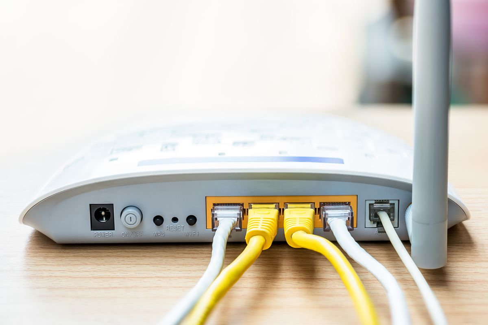

Python Access Point Scanning Tool
Created for a university module, in assistance for Wireless Networking Technologies.
The program is used to walk around an area in order to gather information on a routers access point(s).
The idea is to gather the signal strength as well as other info on an access point, while walking from one point of a room to another. This will provide the affective range of a routers access point.
Once the data is collected and saved, graph can be generated.
Features
- Create graphs based on the signals collected
- Store data collected
What the project taught me
- How to utilise the command prompt for data collection
Sample of Code:
An example of code, demonstrating how the information is collected using the windows command prompt.def _scan():
global signalCol, bssid, x
scanData = str(subprocess.check_output("netsh wlan show interfaces"))
nameLoc = scanData.find("Name")
descLoc = scanData.find("Description")
bssidLoc = scanData.find("BSSID")
signalLoc = scanData.find("Signal")
name = scanData[nameLoc:descLoc-8]
bssid = scanData[bssidLoc:bssidLoc+42]
signal = scanData[signalLoc:signalLoc+28]
print(name)
print(bssid)
print(signal)
bssidComp = bssid
signalCol = []
x = 0
while bssidComp == bssid:
time.sleep(1)
scanData = str(subprocess.check_output("netsh wlan show interfaces"))
bssidLoc = scanData.find("BSSID")
signalLoc = scanData.find("Signal")
bssidComp = scanData[bssidLoc:bssidLoc+42]
signal = scanData[signalLoc+25:signalLoc+27]
signalCol.append(int(signal))
print(signal)
#print(scanData)
x += 1